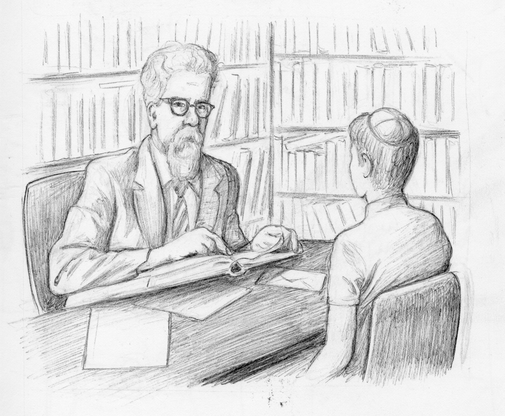

By most accounts, Josh’s life is utopic. Growing up in an observant Jewish family, he lives in a nice house with a front and backyard in a stereotypical New York City suburb. He has a good number of friends, and most of the establishments from his childhood, like the local ice cream store, 7/11, and Blockbuster are still around. While going to the supermarket and the local mall means driving, some places like ice cream store are within walking distance. His high marks in high school gave him the opportunity to pursue a degree at a selective college.
Josh is in the summer after his sophomore year in college. He wants this summer to be relaxing, but so far his internship is getting the best of him. Josh is not the most active, but has a fine build and tries to exercise at least a few times a week. In any case, on this one summer day he decides he wants to relax. So, after watching an episode of bootlegged Kleinfeld he picked up in Chinatown, he goes for a walk. He brings his CD player with him and a new CD he got in his box of Puff Puffs earlier that morning. The cereal box claims this CD has a guided meditation on it specifically tailored for teens and young adults.
Josh puts the CD into his Diskman with a click and closes it, plugs in his headphones and starts listening. He follows the narrator, and is instructed to take a few deep breaths and focus on his act of walking. Before he realizes, Josh is into the meditation and is able to clear his mind up to the point where he feels he is just about to fall asleep.
He wakes up at Blockbuster facing his old friend Ronald. Josh has known Ronald all his life. Ronald grew up religious and gradually lost it all to become an atheist in college.
“So Josh, whats up?” Ron asks while looking at the section of new releases.
“How is The Union Institute treating you? I heard there are some crazy parties that go on there.” He says as he picks up a copy of Chicken Big.
“Wild man Ron! It is good to see you.” Josh responds as he takes off his orange lens sunglasses. “Union Shmunion... It’s summer. You know.” Josh audibly sighs, “What's good with you. I hear you aren’t religious anymore. As I seem to recall, you were basically the high school Rabbi. I mean you wouldn’t even touch coffee unless it was certified Kosher.”
“So you have to be nosey Josh. You’ve not changed one bit.”
“What? You expected me to change so soon?”
“Yeah. Clearly not.”
“So what’s the deal?”
“Well...” Ron’s voice trails off. “Have you ever really considered what you’re doing Josh? Have you ever questioned if any of it makes any sense”
“Well, of course a little. Haven’t we all?”
“Sure, but im talking about starting from zero, doing a wipe on your brain. Do you think from that fresh start you’d end up being who you are right now?”
Josh grins and answers “Probably not. But I am not sure that’s relevant. I believe I am who I am for a reason. Ultimately, I believe have been placed here intentionally.”
“Fair enough. But put that aside and think about the actual validity of this religion. It’s all bullshit, Josh. You just don’t see it ‘cause you were born into it and a bunch of Rabbis impressed you with big books. Did you ever realize that the whole premise of the Rabbis is to figure out what the Truth is? Shouldn’t that be apparent in some divine revelation of sorts?”
“Your point is decent, Ron” Josh quickly reaches for Rob’s copy of Chicken Big “but, I do not think that is the point.”
“Maybe, Josh. I just can’t convince myself of that. Believe me, if I could I would.”
Suddenly Josh feels drowsy and wakes up in front of Sam Pearlberg in his office at UCLA.
Josh, an Artificial Intelligence fanatic, recognizes Dr. Pearlberg instantly.
“Hello Josh, nice of you to show up.”
Josh looks around the office in joyous disbelief. Behind him a chalkboard shows some markings that look like someone was working out a probability problem. Dr. Pearlberg’s desk is cluttered with stacks of papers and books. “Dr. Pearlberg, I am a big admirer of your work. It is such an honor to meet you.”
“My pleasure, what can I help you with?”
“Well, I read that you realized at eleven years old that there’s no God. How? How did you know for sure?”
“I do not know for sure Josh. There are very few absolutes in this world.” Dr. Pearlberg grins as he sips from his mug. “Sure there are some Truths in the world that are not contested, such as some of the laws of physics, but there is a strong discussion to be had there whether you can even call those Truths. God is definitely not one of these Truths.” Dr. Pearlberg exhales and turns to face Josh. “I can not tell you what to believe, or tell you with certainty that God does not exist But what I can tell you is that there are no reasons to believe in a God. Look, Josh, it was hard for me to tell my parents this. I come from a strong lineage of devout Jews. My grandfather was in the group that re-settled B’nai Brak in the 1920s, but I could not do it.” Dr. Pearlberg pauses for a second.
“But your work on causality.” Josh says with a certain urgency. “How can there be causality in randomness? How can we as humans think in an orderly fashion and have intuition if we are merely composed of atoms, which in their very nature are unpredictable.”
“This question is a good one Josh, but it makes a classical assumption that many religious people think.” Dr. Pearlberg picks up a piece of chalk that is lying on his table. “God implies order, but the converse is not necessarily true.”
“Why?” Interrupts Josh.
“Because order can just be a result of the properties of chance. For example, each time you flip a coin, the outcome is random, but after a few hundred flips you can be pretty confident what the distribution is.”
Desperate Josh asks, “Professor, what about something like free will, do you believe there will be room for that in science?”
“There is no such thing as free will, Josh, that will violate the first law of thermodynamics.” Dr. Pearlberg asserts as he casually breaks his chalk in half in his hand. “If you want the Truth; look to math. That is the closest you will get to real Truth and justice. I am no mathematician, but I respect them. They have developed a castle of order out of our reality of randomness. In reality nothing is as orderly as they postulate, but it is still amazing how they have managed to build such a strong basis of order in this world.”
Taken aback, Josh slumps into his seat, his hands covering his face. When he lifts his head, he’s in a physics lecture, Robert Fenman is at the board.
“An object in an inertial reference frame has no net forces acting upon it. In other words, this object is either at rest or moving with a constant velocity.” Professor Fenman turns towards the class, “As a side note, the concept of an inertial reference frame gets generalized in special relativity, something which will not be covered in this class.”
The lecture hall starts to rumble as students get up. “Please, as the TAs have been telling you, hand in your homework by Tuesday night.” Josh makes his way down to the podium.
“Professor, can I ask you a few questions?”
“Sure, follow me to my office.”
Josh follows Professor Fenman down the hallway into his office. The office is clean, with two books on the Professor's desk. Josh proceeds: “Professor, recently I have been interested in astronomy.” Josh glances out the window. “Given that it is beyond my field of focus, most of my knowledge has been from PBS Nova specials and the books I can find in the library. My real curiosity is about the energy in collapsed stars. Neutron stars and black holes specifically.” Josh pauses for a second. “What is the limit on all the energy in this world? Given that we are still expanding, and from what I understand we are accelerating, will we ever run out of energy or say room to expand into?”
“That is a good question Josh.” Fenman pauses; “and at this point there is no answer to that question. It is something of active research.” Professor Fenman pauses for another second. “I see that you are religious, and I do not want to shatter your hopes and beliefs.” Professor Fenman closes the book on his table, “You see Josh, about 1000 years ago they did not understand why it rained or what the stars were. I am sure some student went up to his teacher and asked him a similar question, but about the esoteric origins of rain.” Professor Fenman clears his throat, “I am certain the teacher at that point was not confident of any answer. Yet, that did not stop him from supplying some answer and being confident that in enough time a scientific answer will be found.”
“How can that be a valid scientific answer?” Josh asked frantically. “You are basically saying there is no room for anything but science. Don’t you think that there is a certain point where we will not be able to solve further something that is beyond our scope of intellect?”
“Intentionally so, Josh.” Professor Fenman looks Josh in the eyes. “I do not believe there needs to be anything other than science. As the universe is infinite, so is our curiosity, and we will never get to the point where we will have figured everything out nor will we get to a point where we give up.”
Josh walks out of the room and went to the closest water fountain. He takes a sip of water and then finds himself in Rabbi Mosses Hershey’s study in Manhattan.
Josh is situated in a chair on the other side of the desk in the Rabbi’s study. The room is small but overflowing with books. Every shelf is filled, and an additional stack sits on each ledge. The study has a view of the inside of the apartment complex. Not much can be seen as there is a big tree blocking the view, but Josh sees that it is dark outside. Rabbi Hershey is in the middle of reading a book.
“Rabbi, I have had a question that has been bothering me for some time now.”
“Please Josh, what is on your mind?” Rabbi Hershey answers as he looks up.
“How can I be confident that Judaism is the True religion?” Josh continues, “What is the probability that I was born into the religion with the one and only truth?”
“This question Josh, is an important one. Many young adults have this question, and sadly too many leave our religion on account of this.” The Rabbi pauses for a few seconds. “Truth can be found in many different forms. To a certain extent, it is not clear to me that we as humans can even achieve ultimate Truth. So the more correct thing to say would be that there are many valid approaches to religion. Now, with that being said, Judaism is more than a path to Truth for you. Being a part of the children of Israel is part of your identity in the sense that it has defined who you are, and where you are, directly through your ancestors.”
“Rabbi, how long am I supposed to hang on this identity.”
“This identity was something the order of this world placed in you, boychik. Everyone needs an identity, some strong foundation to build hopes, desires, dreams out of. In the world we are on a journey to understand ourselves and each other, and there is no way to do that in a vacuum. Being part of this religion or nation gives you strong footing and guidance in how to move yourself without getting lost in this complex world.”
Suddenly Josh wakes up in a cold sweat with his headphones on the floor next to him.
“Wow, what in the world was that. I must be really dehydrated.”
Josh gets up, brushes himself off and starts walking home. As he makes his way back, he decides to put his headphones back on and see what he was in the middle of listening too. He hits play and starts to listen.
“I hope you enjoyed that experience Josh.”
Panicking, Josh responds, “How do you know my name, what are you?”
“Well Josh, I am actually a neural network trained on your brain waves.”
“What does that mean? How did you get into my CD player?”
“It means that by gathering your brain waves I have been able to model your brain. I am basically you. Because I am electronic, I have been able to be trained much longer than you have been alive, which has given me much more insight into how you think. As to where I came from, I cannot really tell you for sure, because it will not make much sense to you at this point in your life.”
“Wait! So, you’re telling me that all my thoughts and feelings can just be learned? Doesn’t that mean they’re just bullshit predictable sequences of neural firings?”
“Well Josh that was not the point of this exercise of this conversation, but yes I can predict ...”
Mid sentence, Josh takes the CD player and dashes it on the ground; he smashes it into the smallest pieces he can.
Dark Mode!